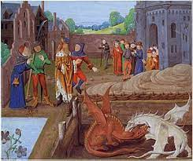

Draconic creatures appear in virtually all cultures around the globe[12] and the earliest attested reports of draconic creatures resemble giant snakes. Draconic creatures are first described in the mythologies of the ancient Near East and appear in ancient Mesopotamian art and literature. Stories about storm-gods slaying giant serpents occur throughout nearly all Near Eastern and Indo-European mythologies. Famous prototypical draconic creatures include the mušḫuššu of ancient Mesopotamia; Apep in Egyptian mythology; Vṛtra in the Rigveda; the Leviathan in the Hebrew Bible; Grand'Goule in the Poitou region in France; Python, Ladon, Wyvern and the Lernaean Hydra in Greek mythology; Kulshedra in Albanian Mythology; Unhcegila in Lakota mythology; Jörmungandr, Níðhöggr, and Fafnir in Norse mythology; the dragon from Beowulf; and aži and az in ancient Persian mythology, closely related to another mythological figure, called Aži Dahaka or Zahhak.
- mythologies
- Persia
- Large cats